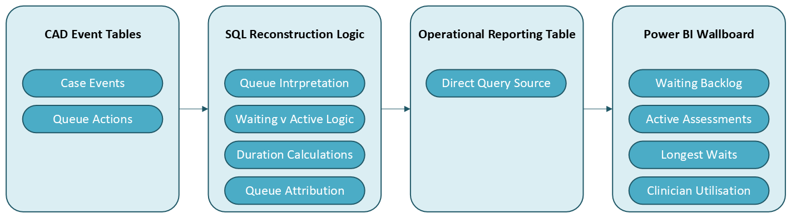

Operational Context
Ambulance Service Clinical Contact Centre handling incoming 999 and 111 calls, dispatching ambulance responses and providing remote telephone triage and assessment service.
Around one third of incoming emergency cases were remotely assessed by clinicians to potentially resolve issues over the telephone. Operational team leaders relied on the CAD (Patient Management System) to understand queue demand and clinician workload, which provided limited visibility of waiting cases and almost no visibility of clinician utilisation.
The requirement was for a near-live wallboard capable of supporting clinical team leaders across multiple queues continuously throughout the day.
Business Problem
The challenge was not simply visualising queue counts but reconstructing the operational state of cases from CAD data. Case states were represented indirectly through audited events, cases could move repeatedly between queues, generate conflicting or duplicate event markers, enter an active state without expected markers or leave a queue without any event recorded. Queue status was ultimately inferred from a combination of events rather than explicit status fields. This created ambiguity when calculating waiting cases, active clinician workload and time within a queue. Without resolving these behaviours, operational metrics would routinely overstate or understate true workload.
Technical Environment
The source systems were the CAD operational tables; case details and event tables, queue event audit tables and case type lookup tables. The technologies used were SQL Server, Power BI Direct Query and a near-live refresh model. Vendor discussion took place to investigate undocumented CAD parameters and queue behaviour.
Data Flow

Investigation and Workflow Interpretation
A significant proportion of the work involved interpreting undocumented behaviour within the CAD case event and queue action tables. This required tracing complete case histories, validating event sequencing against operational workflow and identifying which actions genuinely represented queue placement and active assessment activity.
Some workflow edge cases required specific handling where cases moved into, out of or between queues, generated duplicate or conflicting audit markers and entered or completed an assessment, without any event markers.
Queue Reconstruction Logic
Operational queue status could not be derived from a single field or timestamp. Queue state was reconstructed dynamically using latest valid queue change, latest clinician activity, queue entry events, state markers and timing relationships between audit actions. This allowed the reporting model to distinguish waiting cases, active clinician assessments, obsolete queue entries and reopened or reassigned cases.
Validation
The logic was validated through a direct review of individual case audit histories, comparison against live CAD behaviour, operational walk-throughs with clinical teams, vendor discussions, and testing against known edge-case incidents.
SQL Transformation
A lightweight SQL extraction process was developed to support near-live operational reporting without introducing significant load onto the CAD environment. The extraction process:
- identified the latest valid queue start for each case
- reconstructed active versus waiting status
- derived elapsed waiting and assessment durations
- classified cases by operational queue and priority
- filtered invalid or obsolete queue states
The query refreshed every 60 seconds and populated a compact reporting table optimised for Direct Query consumption. Despite the complexity of the operational logic, the extraction query consistently executed in under one second.
Power BI Design
The Power BI solution was designed as a wallboard rather than a traditional analytical report. The dashboard provided live waiting volumes, active clinician workload, longest waiting case by priority, longest active assessment duration and active clinician counts by role. The model intentionally remained lightweight using:
- a single operational fact table
- small lookup dimensions for priorities and queue labels
- Direct Query architecture and
- minimal transformation within Power BI
Additional functionality included drill-through into detailed case-level records, bookmark navigation between queue types, and metric definitions and support/version information for governance. The wallboard was deployed for continuous 24/7 operational use across clinicians and supervisory teams.
Outcome
The solution became the primary operational view of live clinical queue demand. It provided operational teams with immediate visibility of true queue backlog, separation of waiting versus active clinical workload, identification of prolonged waits by priority and live monitoring of clinician utilisation.
The reporting logic and queue interpretation model were later reused within wider clinical performance reporting development.
Personal Contribution
Responsible for the end-to-end investigation, SQL development, operational logic design, validation and Power BI implementation including:
- Reverse engineered undocumented CAD queue behaviour
- Designed operational queue-state reconstruction logic
- Developed near-live SQL extraction and transformation process
- Implemented Direct Query Power BI wallboard
- Validated KPI logic against operational workflow and audit histories
- Worked directly with operational managers and CAD vendor
- Investigated and resolved workflow edge cases affecting queue reporting
- Established reusable logic later used in wider clinical queue reporting